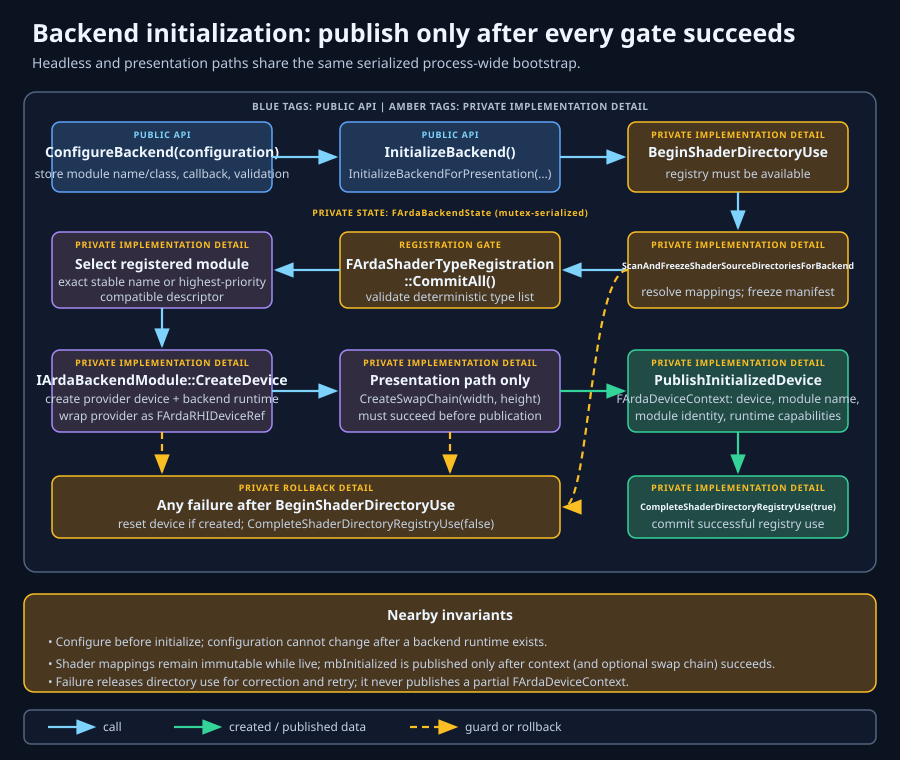
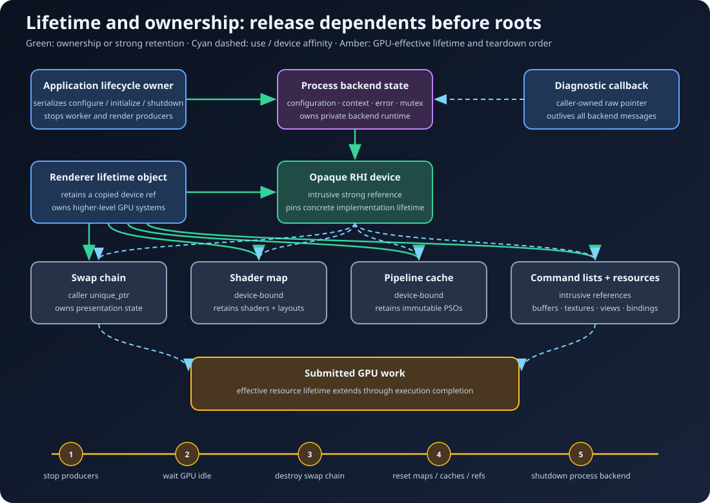

Production bootstrap
Getting started
Backend startup is a transaction: choose policy, register immutable inputs, create a native device, publish one coherent context, run GPU work, then reverse ownership in a controlled teardown.
Learning objectives
After this chapter, you should be able to:
- distinguish a graphics API backend, physical adapter, logical device, and command queue;
- select D3D12 or Vulkan without confusing platform defaults with guaranteed availability;
- configure shader timing and writable shader/pipeline cache paths alongside validation and diagnostics;
- choose between headless and presentation initialization;
- explain each initialization gate and its rollback behavior;
- retain the device safely and tear down renderer-owned objects in dependency order; and
- turn startup failures into actionable production diagnostics.
Prerequisites
Read the backend fundamentals first. You should also understand the glossary definitions of ownership, lifetime, queue, swap chain, and validation layer.
At build time, include ArdaBackend.h and link the ArdaBackend target plus the native backend dependencies enabled by the project. Runtime initialization can still fail even when compilation and linking succeed.
Fundamentals: adapter, device, and queue
These terms describe different layers of the GPU execution model.
- Backend
- The implementation family—D3D12 or Vulkan—that creates native objects and translates Arda RHI operations.
- Adapter or physical device
- A discoverable GPU implementation. A system may expose an integrated GPU, discrete GPUs, remote adapters, or software adapters.
- Logical device
- The application's active connection to a selected adapter. It owns object creation facilities and exposes capabilities. ArdaBackend publishes this as an opaque
FArdaRHIDeviceRef. - Queue
- An ordered stream of GPU submissions. Graphics is required. Distinct compute and copy queues are optional capabilities rather than portable assumptions.
ArdaBackend currently owns adapter policy inside each private native backend. D3D12 enumerates high-performance adapters that can create the required device and may fall back to WARP; Vulkan selects a physical device that satisfies required extensions, features, and queue-family constraints. There is no public adapter-index field in FArdaBackendConfiguration, so do not imply that callers can select a particular GPU through this API.
Selecting a backend
An empty FArdaBackendConfiguration::mBackendName selects the globally highest-priority registered module. Initialization still requires at least one linked module, and any implementation can be unavailable because its module, loader, driver, required features, or platform integration is missing.
Selection policy
- Use an explicit stable module name for deterministic production or engine integration.
- Leave the name empty when global module priority is the intended product policy.
- Log the requested backend before initialization and the published backend after success.
- Do not silently switch APIs after an arbitrary failure unless product policy explicitly permits it; fallback can conceal driver defects and produce different artifacts or behavior.
const char* ChooseBackend(bool requestPortableNativeModule)
{
return requestPortableNativeModule ? "native-vulkan" : "native-d3d12";
}// Exact implementation selection, independent of priority.
arda::backend::FArdaBackendConfiguration config;
config.mBackendName = "native-vulkan";
// Or inspect the link-time module set before presenting a choice.
for (const auto& module : arda::backend::EnumerateBackendModules())
Log(module.mName.c_str());The selected module declares its shader representation and artifact extension. The sample native modules consume DXIL or SPIR-V; another module may declare a backend-defined format and compiler service. Confirm deployment includes artifacts for the exact selected module.
Configuration strategy
ConfigureBackend replaces process-wide configuration before a backend runtime exists. It selects an optional exact mBackendName, device source, validation and diagnostics, registered-shader timing, and persistent shader/pipeline cache directories. Relative cache paths are resolved to stable absolute paths when accepted. The shader path must be non-empty; an empty pipeline path explicitly disables native pipeline-cache disk I/O.
Validation policy
Validation defaults to enabled. Keep it enabled in development, continuous integration smoke tests, and reproducible diagnostic builds. Production shipping policy may disable it for performance and external-dependency reasons, but a validation-enabled build should remain available for field reproduction.
Validation is not a correctness mechanism. It can report invalid API use, but it cannot replace descriptor validation, resource-state reasoning, queue synchronization, or lifetime discipline.
Diagnostic callback lifetime
IArdaDiagnosticCallback is caller-owned. The pointer stored in configuration must remain valid for as long as it may receive backend messages. A process service or an object that outlives backend shutdown is appropriate; a stack-local callback that dies after a helper returns is not.
arda::backend::FArdaBackendConfiguration BuildConfiguration(
const char* backendName,
bool enableValidation,
arda::backend::IArdaDiagnosticCallback& diagnostics)
{
arda::backend::FArdaBackendConfiguration config;
config.mBackendName = backendName;
config.mbEnableValidation = enableValidation;
config.mMessageCallback = &diagnostics;
config.mShaderCompilationMode =
arda::backend::EArdaShaderCompilationMode::Startup;
config.mShaderCacheDirectory =
GetWritableUserCache() / "Ardashir" / "shaders";
config.mPipelineCacheDirectory =
GetWritableUserCache() / "Ardashir" / "pipelines";
return config;
}LoadOnly never invokes DXC and eagerly loads deployed bytes. Startup ensures all selected active-backend permutations before device creation, preserving valid .arda-key hits. OnDemand defers compilation, file loading, and shader/layout creation until first lookup. Configure FArdaShaderCompilerConfiguration separately when either compiling mode may need an external DXC executable.
Initialization phases and commit point

- Accept configuration. The selected backend, validation flag, and callback become process policy.
- Acquire shader-directory use. Initialization ensures that the registry is available for a live backend.
- Scan and freeze shader sources. Virtual mappings become an immutable manifest; collisions and invalid paths fail before device publication.
- Commit shader types. Deferred global-shader registrations are validated into a deterministic set.
- Ensure startup shaders when selected. Every active-backend registered permutation is checked against its persistent sidecar and compiled if policy allows. Failure occurs before a native device is created.
- Select and create the linked backend. Core resolves the exact stable module name or globally highest-priority descriptor, validates the requested device source, and asks the module to allocate its backend runtime and RHI provider.
- Initialize implementation state. The module creates or adopts its native/engine device and queues, checks required capabilities, and constructs the opaque RHI device.
- Load native pipeline-cache data. The checked-in modules validate a wrapper keyed by exact module name, initialize their provider cache, safely fall back to an empty cache, and report support through
FArdaRHICapabilities::mbPipelineCachePersistence. - Create presentation state, if requested. The window surface and swap chain must succeed before publication.
- Publish. Device, selected module name, source, and runtime capabilities become stable process state; initialized state is released atomically afterward.
This ordering is a design derivation: publishing early would force every caller to handle half-initialized states. A late commit point makes success mean “the complete selected startup mode is ready.”
Worked example: headless startup
Headless means “no presentation surface,” not “no GPU.” Use it for compute tools, offline processing, tests, servers, and renderer bootstrap that creates presentation later through another design. It is also the required initialization call when adopting a host-owned device; that wrapper is host-presented and rejects presentation initialization. InitializeBackend() returns bool.
#include "ArdaBackend.h"
int RunHeadlessGpuJob()
{
using namespace arda::backend;
FArdaBackendConfiguration config;
config.mbEnableValidation = true;
config.mShaderCompilationMode = EArdaShaderCompilationMode::OnDemand;
config.mShaderCacheDirectory = GetWritableUserCache() / "MyTool" / "shaders";
config.mPipelineCacheDirectory = GetWritableUserCache() / "MyTool" / "pipelines";
if (!ConfigureBackend(config))
return 1;
if (!InitializeBackend())
{
const eastl::string error = GetBackendError();
// Log `error` with the requested backend and validation setting.
ShutdownBackend();
return 2;
}
arda::rhi::FArdaRHIDeviceRef device = GetDevice();
if (!device)
{
ShutdownBackend();
return 3;
}
const FArdaQueueCapabilities queues = GetQueueCapabilities();
if (!queues.mbGraphics)
{
device = nullptr;
ShutdownBackend();
return 4;
}
// Create resources, record command lists, and submit work here.
const arda::rhi::FArdaRHIStatus idle = device->WaitForIdle();
device = nullptr;
ShutdownBackend();
return idle ? 0 : 5;
}GetDevice() returns a retained intrusive reference. Copy it into long-lived subsystems that own GPU objects; do not cache a raw pointer extracted from a temporary reference.
Worked example: presentation startup
Presentation initialization is a distinct transaction because native adapter/device selection can depend on the window surface. It returns EArdaInitializeResult, distinguishing success, backend unavailability, and another failure.
eastl::unique_ptr<arda::backend::IArdaSwapChain> swapChain;
const arda::backend::EArdaInitializeResult result =
arda::backend::InitializeBackendForPresentation(
windowSurface,
initialWidth,
initialHeight,
swapChain);
if (result != arda::backend::EArdaInitializeResult::Success)
{
const eastl::string error = arda::backend::GetBackendError();
// `swapChain` is empty on failure. Report result and error.
arda::backend::ShutdownBackend();
return false;
}
arda::rhi::FArdaRHIDeviceRef device = arda::backend::GetDevice();
// Own both `device` and `swapChain` in the renderer lifetime object.Width and height must be non-zero. The supplied IArdaWindowSurface abstracts an HWND for D3D12 or Vulkan instance extensions and surface creation. The returned eastl::unique_ptr<IArdaSwapChain> is caller-owned and must be destroyed before backend shutdown.
Lifetime and teardown

Why references can outlive shutdown
The process context owns one intrusive device reference. ShutdownBackend() invokes the device's flush-and-disable entry point first; a module with native persistence writes dirty cache data, while an unsupported implementation performs no disk operation. Shutdown then clears the context reference and queue capabilities, resets private backend state, and releases shader-directory use. Other copied intrusive references remain owners and retain the backend or external lifetime token. Clearing a global slot is therefore not the same operation as forcibly invalidating every object.
Flush-and-disable is essential for retained references: after shutdown they may still create resources and pipelines, but they cannot write another cache blob through a path or diagnostic callback owned by the retired process configuration.
Production teardown sequence
- Prevent new render, upload, compilation, and submission work from being scheduled.
- Join or quiesce threads that can access renderer or RHI objects.
- Stop the frame loop and wait for swap-chain operations or device work to become idle.
- Destroy swap chains and presentation framebuffers.
- Reset global shader maps, in-memory pipeline caches, render-graph pools, and renderer-owned resources.
- Call
ShutdownBackend()from the lifecycle owner so native pipeline data is atomically flushed and persistence is disabled. - Release retained command lists, resource references, and the caller's device reference.
- Destroy the diagnostic callback only after no backend messages can arrive.
Calling shutdown repeatedly is harmless in current behavior, but idempotence should support cleanup paths—not substitute for a well-defined owner state machine.
Failure analysis
ConfigureBackendreturns false- The configuration is unsupported in the current process or a backend runtime already exists. Read
GetBackendError(); on non-Windows, selecting D3D12 is rejected here. - Shader registry gate fails
- A mapping, scan, collision, or global shader registration error occurred before native device creation. Correct the shader setup described in Shaders and retry.
- Initialization returns unavailable
- The requested presentation backend cannot be provided. Treat this separately from malformed configuration and log the selected API plus platform details.
- Device creation fails
- Capture the callback stream and latest backend error. Driver support, required native features, validation setup, or adapter suitability may be responsible.
- Startup succeeds but a queue is absent
- This is a capability outcome, not failed initialization. Query
IsQueueAvailableand fall back to the graphics queue where the algorithm permits. - Startup succeeds but a feature is absent
- Inspect device capabilities before creating feature-specific resources or pipelines. Backend type does not imply ray tracing, mesh shaders, bindless resources, or sparse residency.
Always copy GetBackendError() into durable logging before later lifecycle operations can replace the process-wide error.
Production startup checklist
- Backend choice and fallback policy are explicit and logged.
- Shader mode is explicit; deployed bytes exist for
LoadOnly, or an external DXC path and writable user cache exist when compilation is allowed. - The pipeline cache uses a writable per-user directory, or an empty path intentionally disables persistence.
- Diagnostic callback storage outlives the backend.
- Validation policy is derived from the build/run profile, not scattered call sites.
- Virtual shader directories are registered before initialization.
- Exactly one lifecycle owner serializes configure, initialize, and shutdown.
- Headless versus presentation mode is selected before initialization.
- Presentation dimensions are non-zero and the window-surface adapter is ready.
- Every failure path records backend, mode, phase, result, error, and validation messages.
- Device capabilities and queue availability are queried after success.
- Renderer systems receive retained references rather than borrowed pointers.
- Teardown stops producers, waits for GPU completion, reverses ownership, then shuts down.
Chapter summary
- The backend chooses an implementation; the adapter is physical capability; the logical device creates objects; queues execute ordered submissions.
- Configuration is process-wide and includes shader timing plus persistent shader and pipeline cache paths.
- Headless and presentation startup share prerequisite gates but have different outputs and result types.
- The live device context is published only after all required work succeeds.
- Shutdown invokes the optional native pipeline persistence flush-and-disable contract before clearing process ownership; copied intrusive references can still retain objects and backend lifetime.
Review and checkpoint questions
- Why does priority-based module selection not guarantee successful initialization?
- When should a tool use headless startup rather than presentation startup?
- Why must the diagnostic callback outlive initialization?
- What is the commit point of initialization, and what problem does it prevent?
- Why should an application query queue capabilities even after device creation succeeds?
- What must stop before the final device references are released?